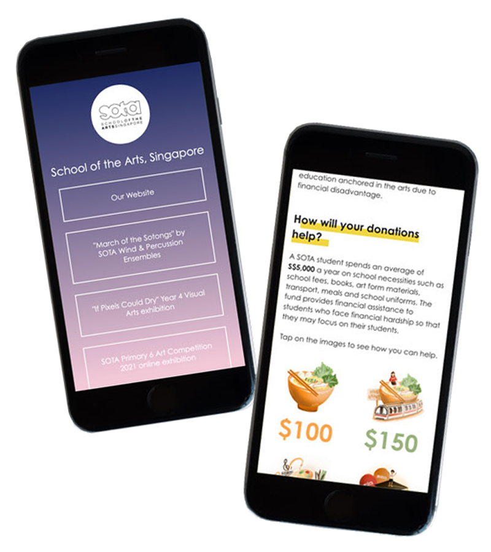
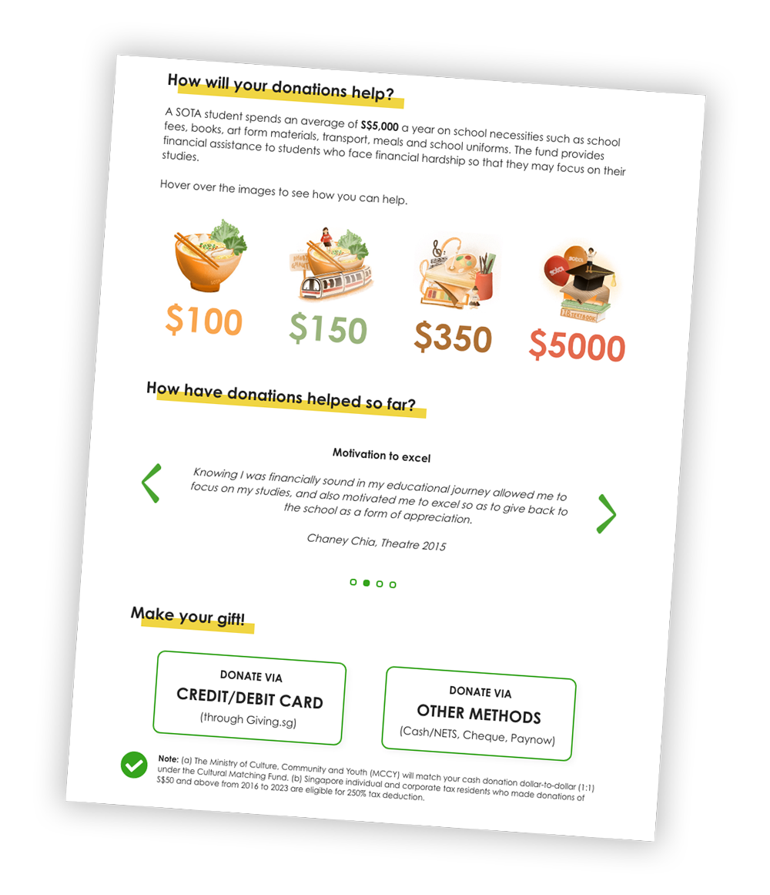
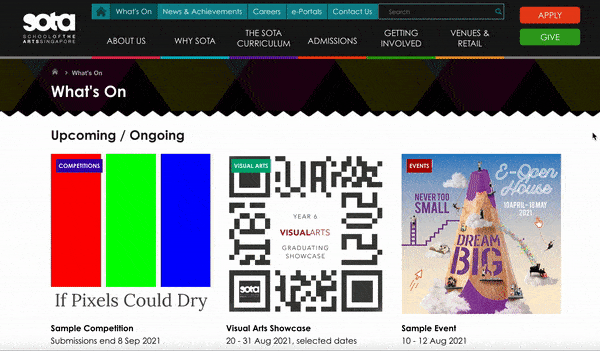
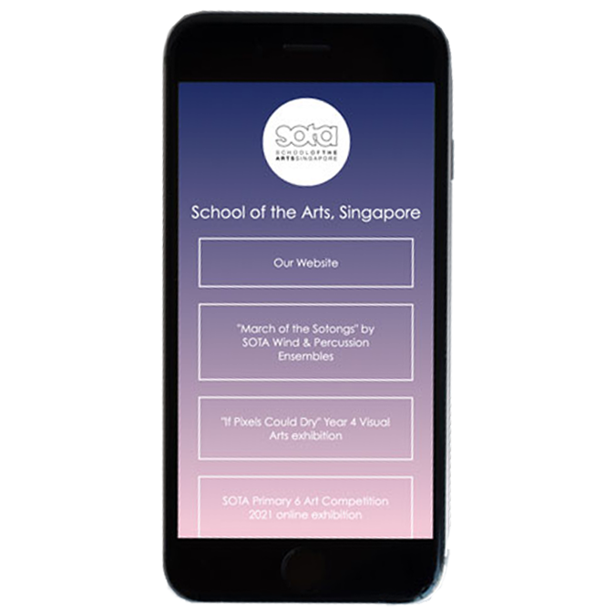

Other SOTA Projects
Interfaces that I designed to enhance the School's digital assets

Here are some other smaller-scale web interfaces that I created for SOTA!
0%
Donate to SOTA
Landing page for potential donors
0%
What's On at SOTA
Events listing/archive
0%
IG 'Link in Bio'
Social Media landing page
Donate to SOTA
(Landing page for potential donors)
(Landing page for potential donors)

What's On at SOTA
(Events listing/archive)
(Events listing/archive)

IG 'Link in Bio'
(Social Media Landing Page)
(Social Media Landing Page)
